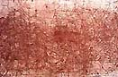
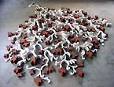
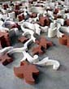
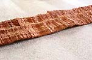
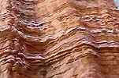
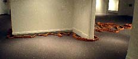
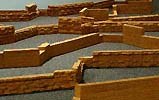

| Jeff Schmuki
American ceramic sculptor.

American
ceramic sculptor Jeff Schmuki asks us to consider what may lie beyond
the horizon with regards to landscape. His hand-built, laminated
and compressed sculptural objects, site responsive installations
and clay drawings represent the Mississippi landscape.
Jeff earned an MFA in Ceramics at NYSCC at Alfred University in
1998 and a BFA in Ceramics from Northern Arizona University in 1993.
He has been a Kohler artist-in-residence in the John Michael Kohler
Arts Center, Sheyboygan, WI . He is currently developing a permanent
work for the new federal courthouse in Jackson, MS. and has exhibited
in the United States, New Zealand, Australia, and South Korea.
Since
1999, he has served as head of ceramics and art history at William
Carey College on the Coast in Gulfport, MS. In the spring of 2006
he will travel to Izmir, Turkey for advanced study and as visiting
artist and professor of ceramics at Dokuz Eylul University.


Artist's Statement
My work is a collection of floor and wall based objects, installations,
and drawings. I am interested in working with common, banal, materials
and the process necessary to bring them into a poetic space. I am
interested in landscape and what what landscape in the 21st century
can mean. My work references, records, and documents my physical
experience of the Mississippi landscape. By translating the bodily
experience into a conceptual understanding, place becomes space
and the physical becomes conceptual.

My current work is about my experience of the Mississippi landscape.
Now when you hear landscape, a painting more than likely first comes
to mind. I want to go beyond that expectation. I want to use actual
landscape to make the work. I am interested in what landscape means
today in the 21st century? One work traces my walk in the piney
woods.
It is laid out on the floor and leads from room to room much like
the original path I took. Being interested in science, the work
also references the geology of the area. Each unit is composed of
laminated, and compressed clay sheets. Each unit is inspired by
how the land was formed as well as the rise and fall of the path.
This modular method might also reference our digital age and how
information is broken down into small bits. The canvas on which
I work is stained by the local red clay and generates a drawing
or record of each landscape. I think our times and experiences are
much different than those that occurred just 25 even 50 years ago.
How might our responses to landscape also reflect our present time?

More Artists of the Week
More Articles
|
{kind=link}
{kind=link}
{kind=link}
{kind=link}
{kind=link}
{kind=link}
{kind=link}